Cooking & Shared Meals
This page is an extension of my story beyond code. Cooking has always been my way of staying connected —
to my family, to traditions, and to the small moments that turn into lasting memories.
These recipes are the ones I come back to, the ones I tweak, share, and recreate so the people around me
can re-enjoy meals we've loved together.
Some are rooted in tradition, others are experiments, but all of them carry a bit of familiarity —
the kind that makes a meal feel like home no matter where you are.

Methi Thepla Focaccia
20–25 min bake + overnight ferment
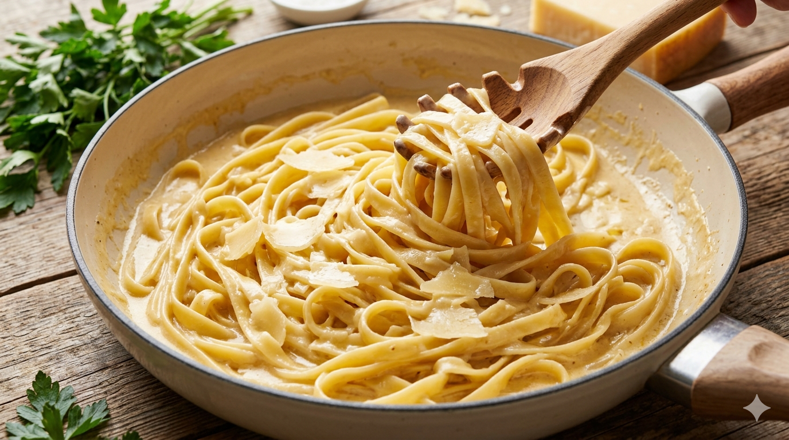
Authentic Alfredo
15 min
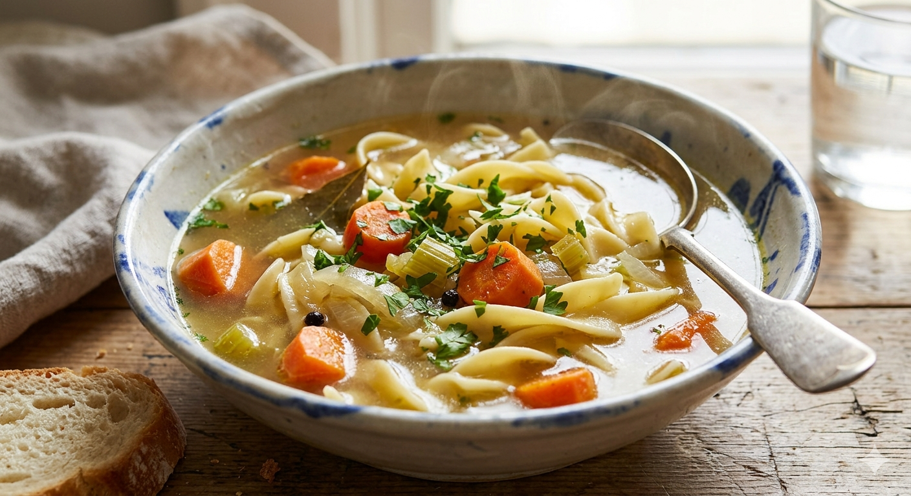
Vegetable Noodle Soup
35 min
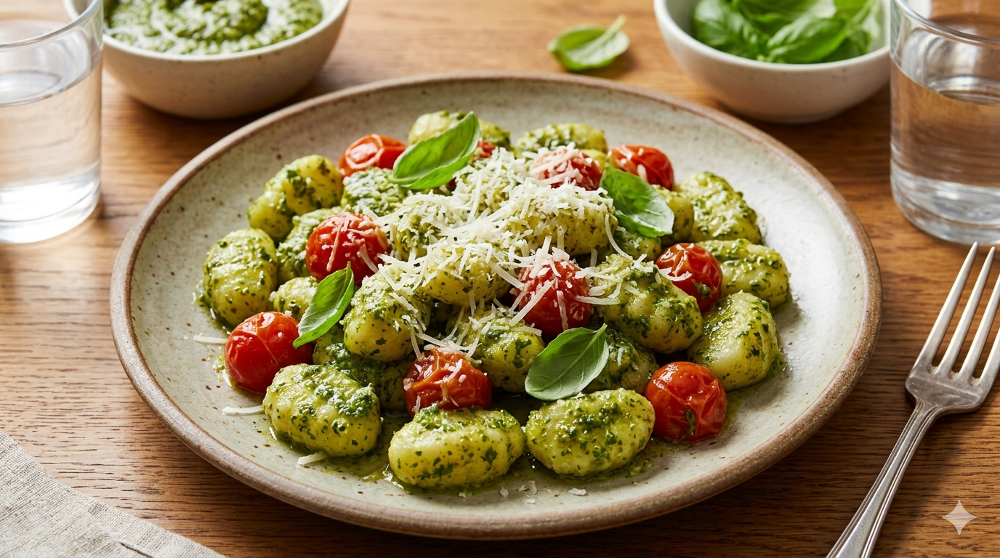
Potato Gnocchi
60 min
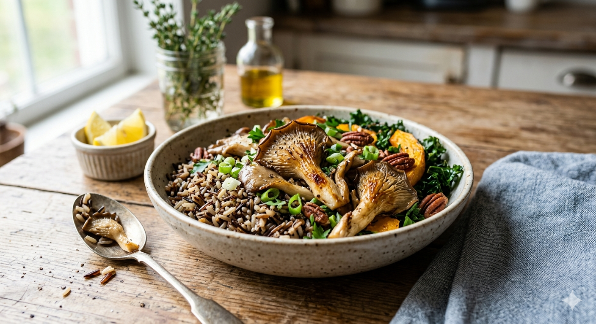
Wild Rice Mushroom Bowl
35 min
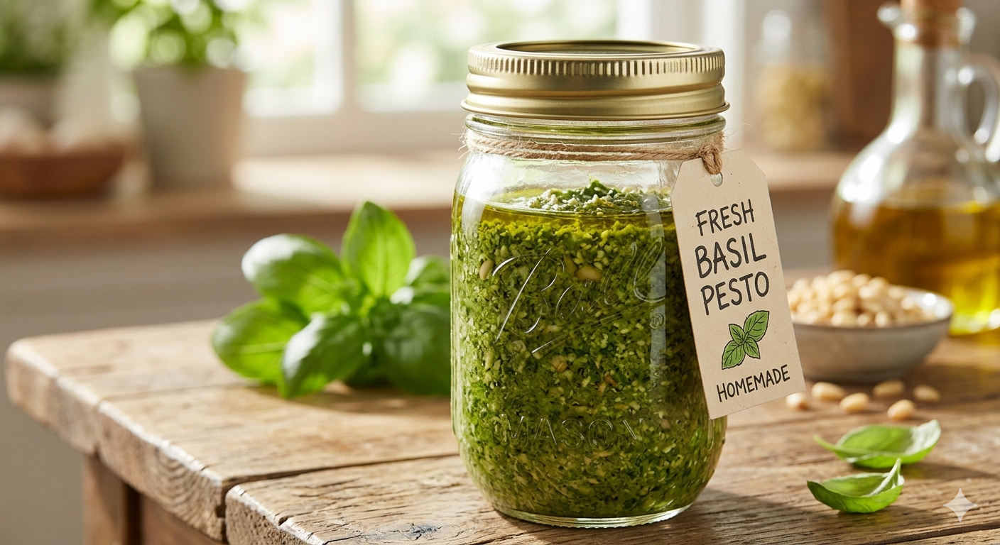
Pesto
10 min
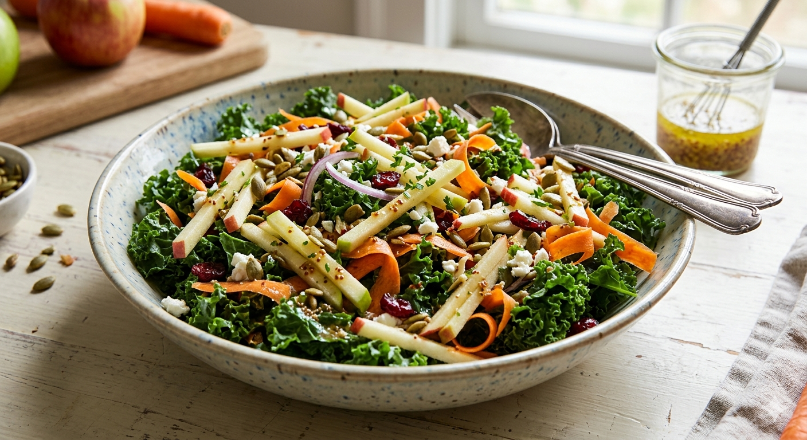
Apple, Carrot & Kale Salad
20 min

Chili-Lime Quinoa Black Bean Salad
30–45 min
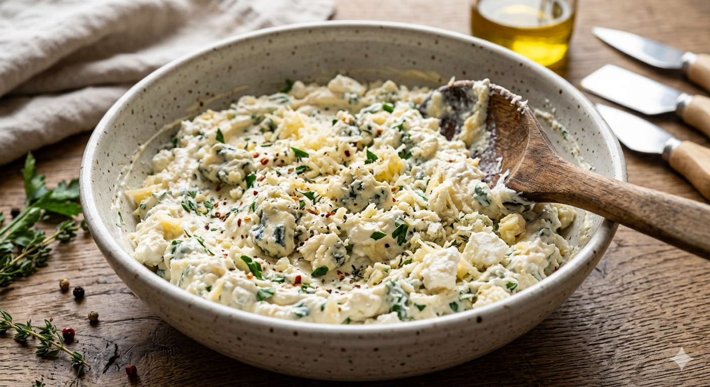
Three Cheese Filling
10 min
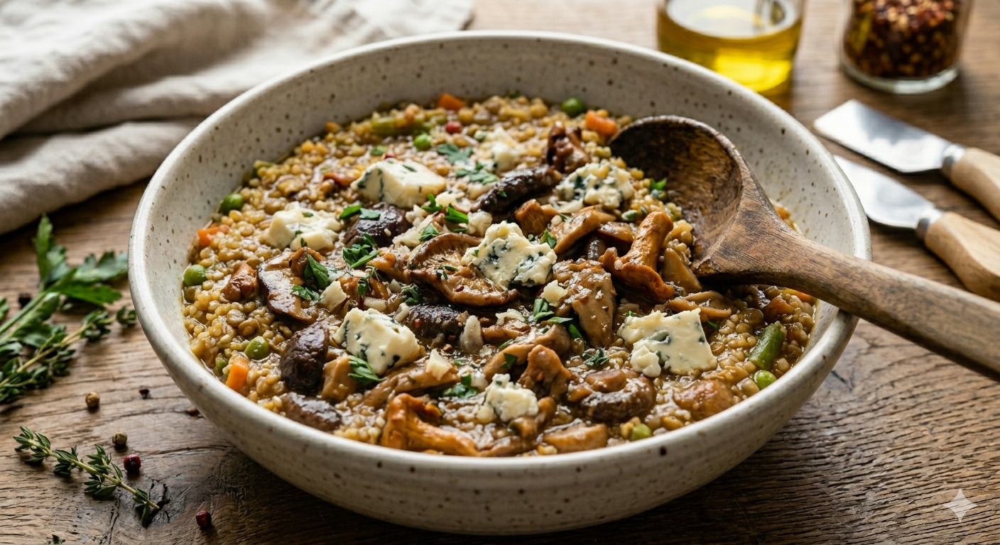
Quinoa Khichdi
10 min
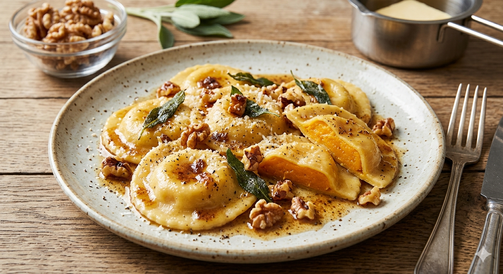
Butternut Squash Filling
45 min
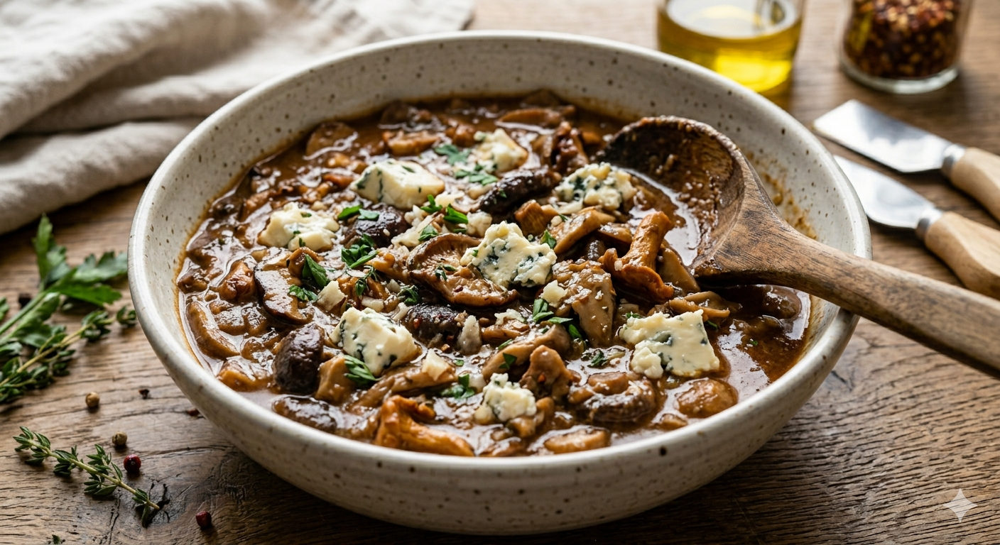
Mushroom Ragu
35 min
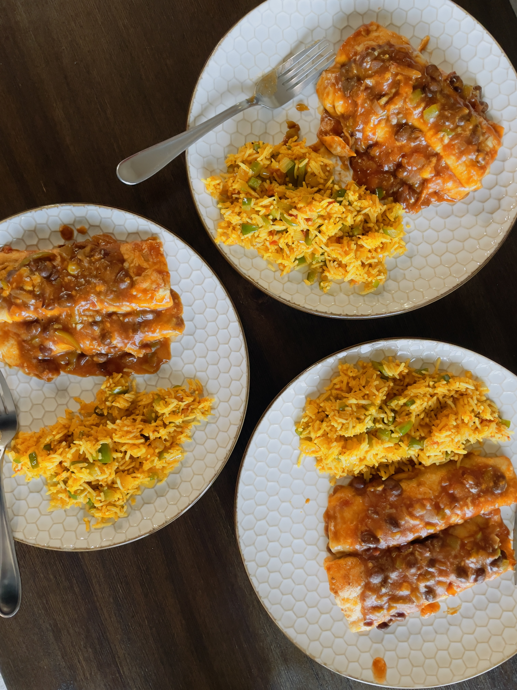
Sweet Potato Enchilada
40 mins
All recipes and content are © Dhvani Mistry. Images might be generated using Gemini.